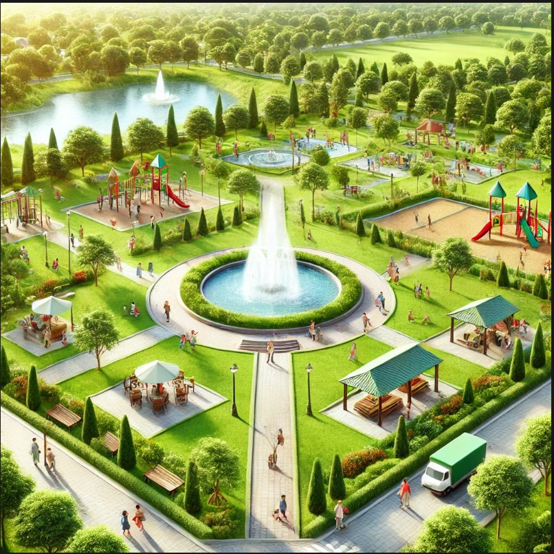

Parque Central
El Parque Central es uno de los más antiguos y populares del municipio. Cuenta con áreas de juegos infantiles, zonas de picnic, y grandes áreas verdes para disfrutar con la familia.
Video del Parque Central
Parque de la Cultura
El Parque de la Cultura es conocido por sus exposiciones de arte y eventos culturales al aire libre. Tiene una fuente interactiva y áreas para actividades artísticas.
Video del Parque de la Cultura
Parque Ecológico

El Parque Ecológico ofrece una experiencia en la naturaleza. Cuenta con senderos ecológicos, una reserva de fauna y flora, y espacios para actividades educativas sobre el medio ambiente.